사업명
원삼 센트레빌 퍼스트원 (가칭)
원삼 센트레빌 퍼스트원 기업숙소·직원숙소·법인 임차 검토자료입니다. 원본 PDF 다운로드는 제공하지 않으며, 세부 자료는 기업자료 요청 접수 후 이메일 또는 유선으로 개별 안내됩니다.
원삼 센트레빌 퍼스트원 (가칭)
경기도 용인시 처인구 원삼면 일대
주거형 오피스텔 + 근린생활시설, 기업숙소 검토 가능 상품
기업숙소, 직원숙소, 법인 임차, 현장 근무자 숙소
기업자료 요청 접수 후 이메일 또는 유선 개별 안내
홈페이지 내 읽기 전용 열람 + 요청 시 개별 안내
원삼 센트레빌 퍼스트원은 일반 분양 상담과 별도로 기업숙소, 직원숙소, 법인 임차 수요 검토가 가능한 주거형 상품입니다. 용인시 처인구 원삼면 일대에서 검토 가능한 상품으로, 반도체 클러스터 배후 산업수요와 장기 체류 인력의 숙소 수요를 함께 검토할 수 있습니다.
기업 임직원 숙소 담당자, 법인 임차 담당자, 협력사·현장 근무자 숙소 담당자
계약 판단 전 확인해야 할 검토 항목을 정리한 안내형 리딩 자료입니다.
홈페이지 리딩과 기업자료 요청 후 이메일 안내를 함께 운영합니다.
파일 다운로드가 아닌 열람과 요청 중심으로 자료를 운영합니다.
아래 자료는 기업수요 검토를 위한 읽기 전용 안내자료입니다. 원본 PDF 다운로드는 제공하지 않으며, 세부 자료는 기업자료 요청 접수 후 이메일 또는 유선으로 개별 안내됩니다.
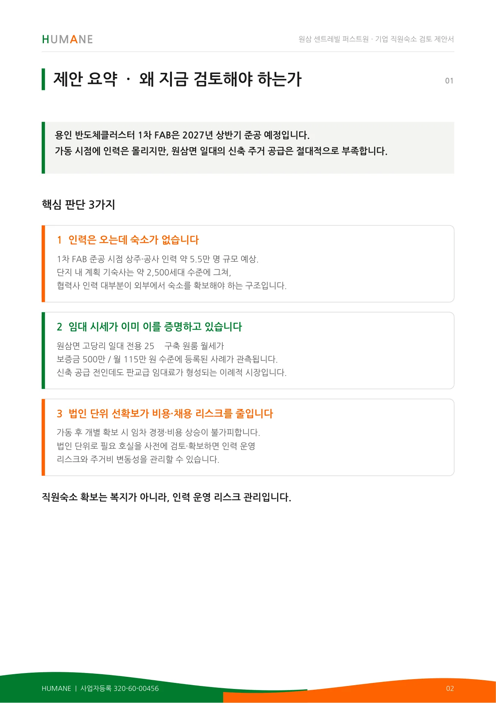
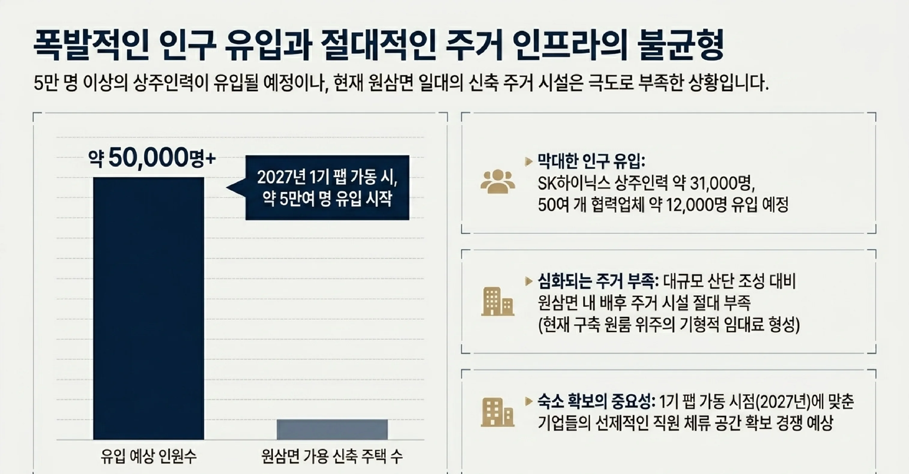
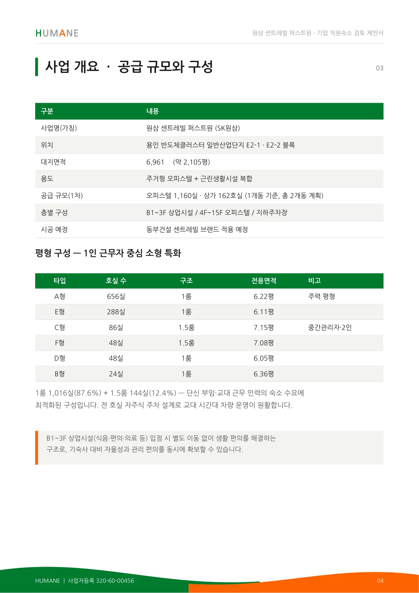
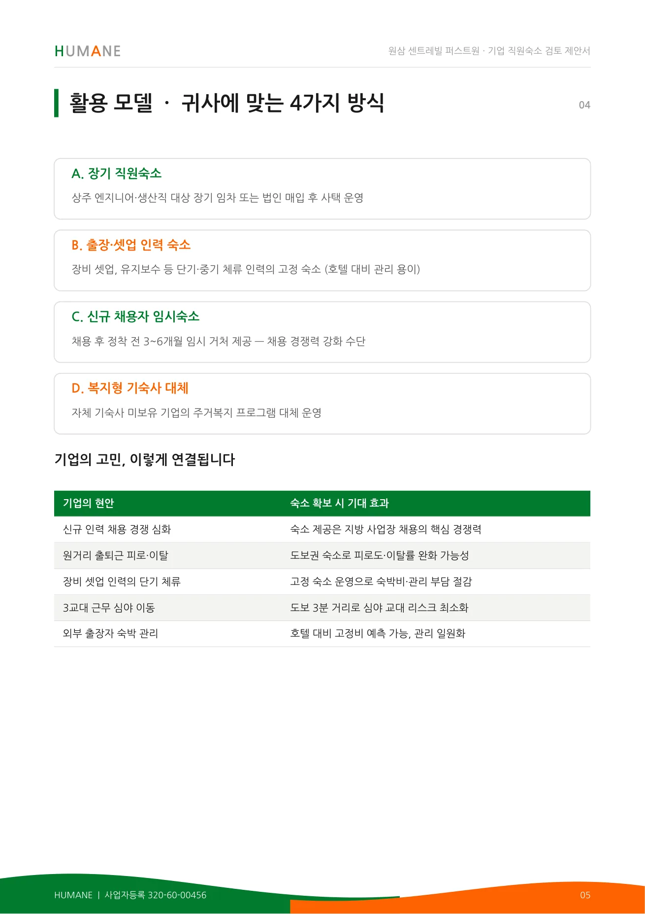
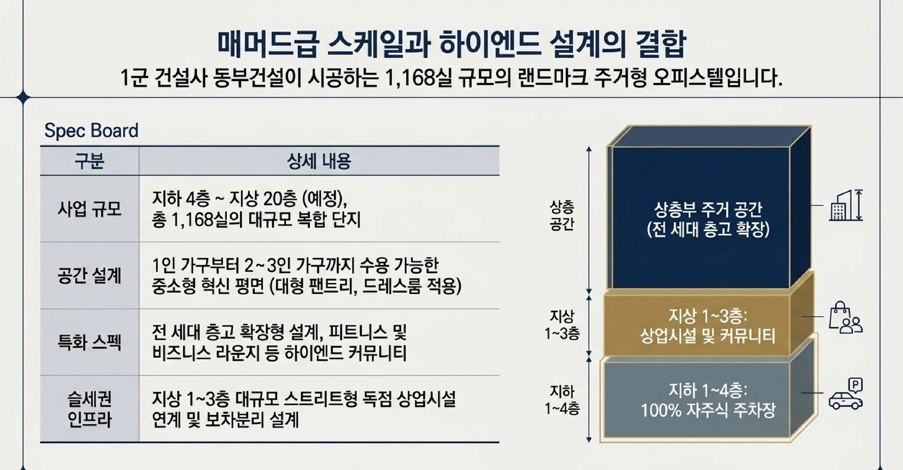
원본 파일 또는 세부 검토자료가 필요한 기업 담당자는 자료요청을 남겨주세요. 담당자가 확인 후 이메일 또는 유선으로 개별 안내드립니다.
자료요청하기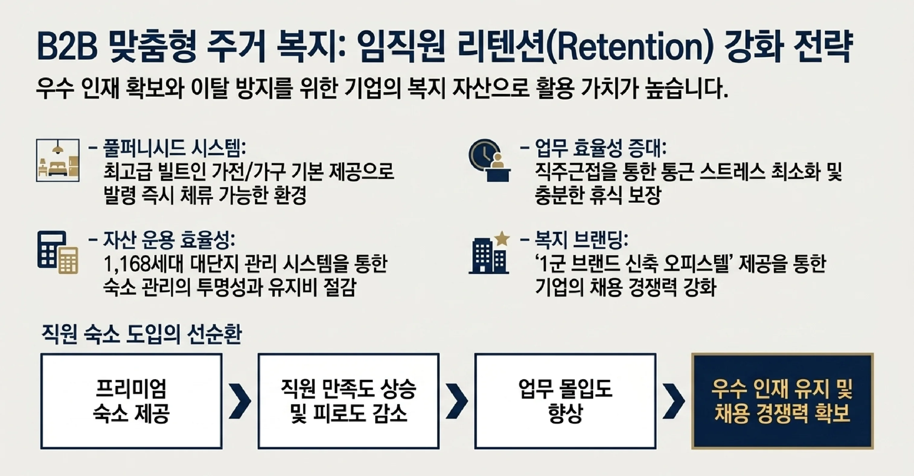
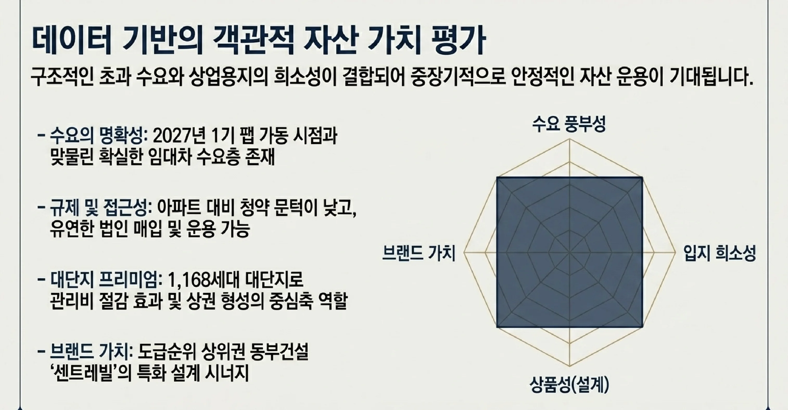
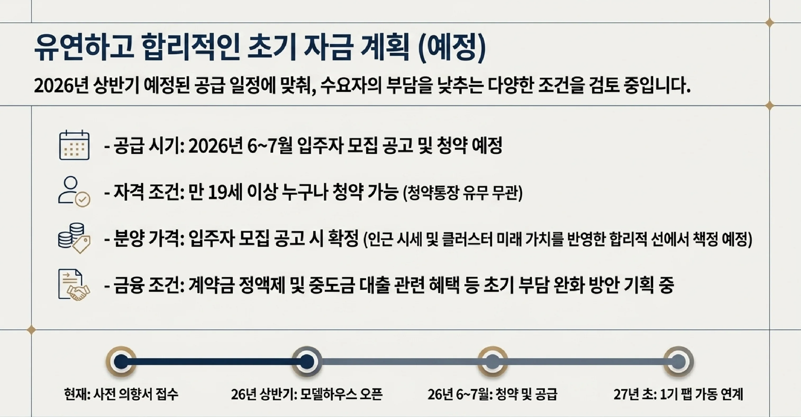
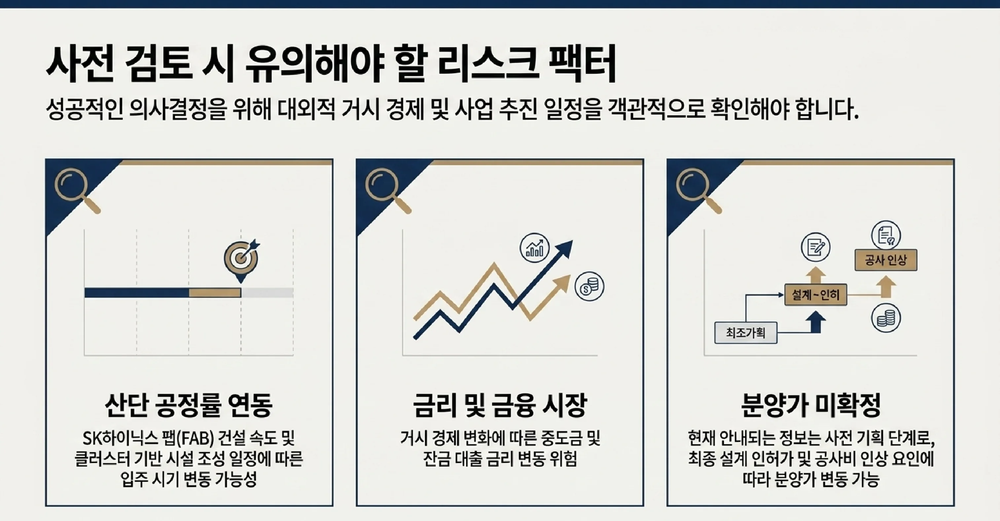
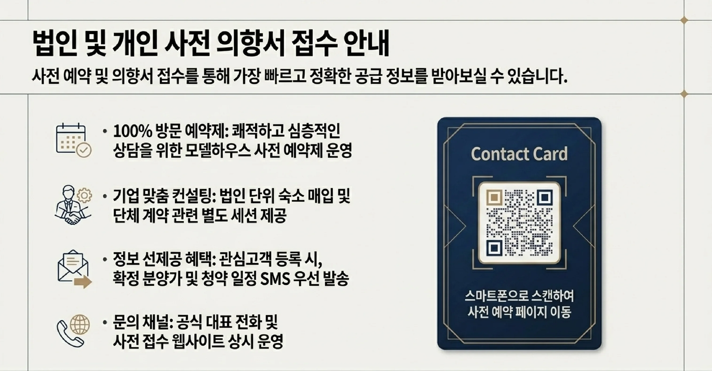
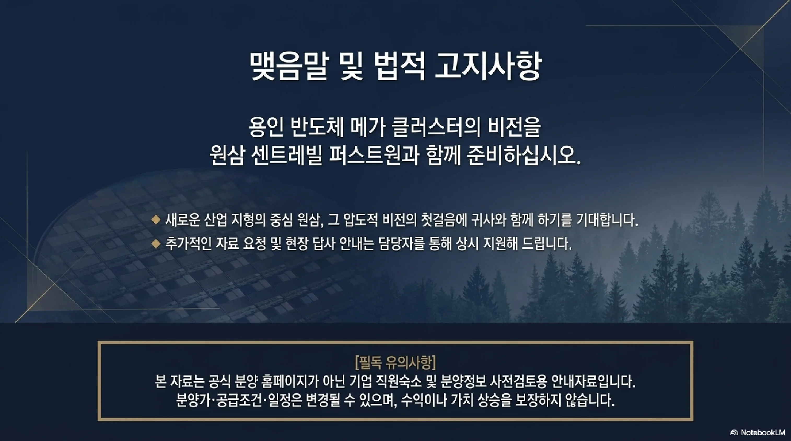
원삼 일대는 반도체 클러스터 개발 흐름과 산업단지 배후 수요가 함께 검토되는 지역입니다. 다만 개발계획, 입주시점, 교통 여건은 반드시 최신 자료 기준 확인이 필요합니다.
경기도 용인시 처인구 원삼면 일대
반도체 클러스터 배후수요, 산업단지 근무자 주거 수요 (확인 필요)
근무지와 숙소 간 이동 부담을 줄일 수 있는 배후 입지 가능성 검토
향후 개발계획은 확정 전 사항으로, 공식 자료 확인이 필요합니다.
기업고객은 직원숙소, 기업숙소, 법인 임차, 현장 근무자 숙소, 장기 체류 인력 숙소 관점에서 활용 가능성을 검토할 수 있습니다.
상주 임직원의 중장기 숙소로 검토할 수 있습니다.
직원복지용 주거 지원 목적으로 검토할 수 있습니다.
법인 명의 임차 계약 방식으로 검토할 수 있습니다.
협력사 현장 근무자, 장기 체류 인력의 숙소로 검토할 수 있습니다.
직원숙소와 법인 임차는 계약 주체와 운영 방식이 다르므로 별도로 확인이 필요합니다.
임직원 배정 기준, 순환 입주 여부, 관리 주체를 함께 검토할 수 있습니다.
회사 부담, 직원 일부 부담 등 비용 분담 방식은 상담을 통해 확인합니다.
법인 명의 계약과 개인 명의 계약의 차이를 확인할 수 있습니다.
인력 이동에 따른 재계약, 중도 해지 조건은 상담 후 개별 확인이 필요합니다.
기업수요 검토는 필요 호실 수와 시점만으로 판단하지 않습니다. 아래 항목을 함께 확인해 주시면 더 정확한 자료를 안내드릴 수 있습니다.
| 항목 | 확인 내용 |
|---|---|
| 필요 호실 수 | 예상 필요 호실 수, 사용 인원, 부서별 배정 가능성 |
| 필요 시점 | 현장 투입 일정, 장기 체류 시작 시점, 입주 가능 시점 |
| 임차 또는 분양 검토 방식 | 법인 임차, 개인 계약, 분양 검토 등 계약 방식 |
| 계약 주체 | 법인 명의 또는 개인 명의 계약 여부 |
| 직원 이동 동선 | 출퇴근 및 셔틀 운영 계획과의 연계 여부 |
| 관리 방식 | 객실 배정, 순환 입주 등 운영 관리 방식 |
| 자료 수신 이메일 | 세부 자료를 받을 담당자 이메일 주소 |
| 자료 | 제공 방식 |
|---|---|
| 기업수요 검토 보고서 | 홈페이지 리딩 |
| 기업유치 보고자료 | 기업자료 요청 후 이메일 안내 |
| 세부 가격자료 | 상담 후 개별 안내 |
| 잔여호실 | 상담 후 개별 안내 |
본 페이지의 정보는 상담 및 자료 안내를 위한 참고 정보입니다.
분양가, 잔여호실, 계약조건, 입주시점 등은 변동될 수 있으므로 상담 시 최신 자료 기준으로 확인해 주시기 바랍니다.
본 페이지는 투자수익이나 가격 상승을 보장하지 않습니다.